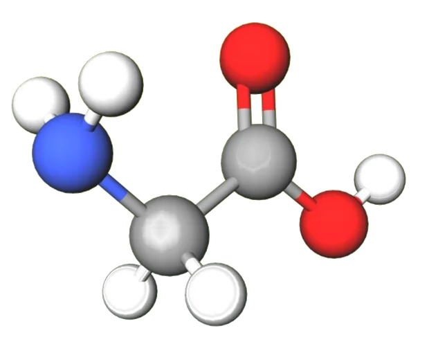
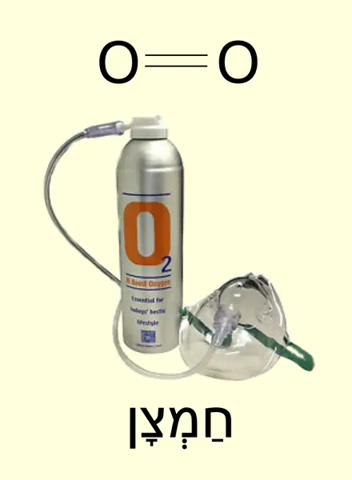
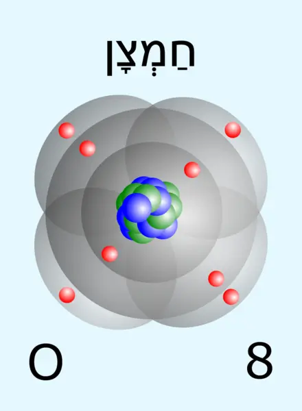
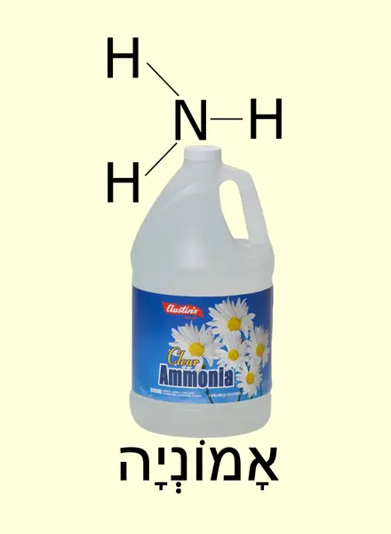
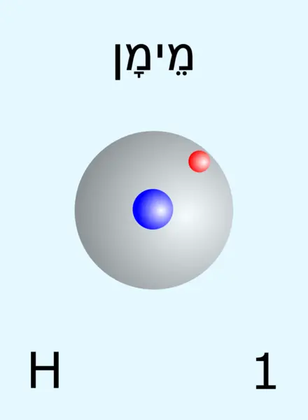
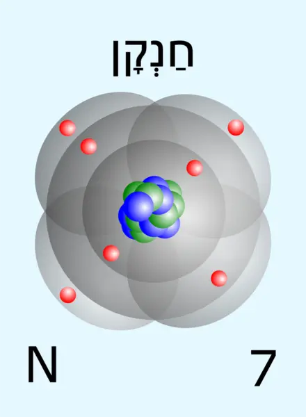
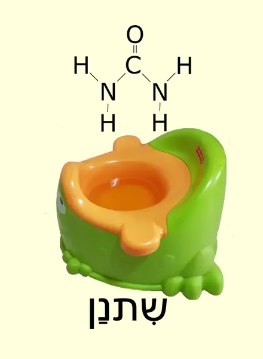
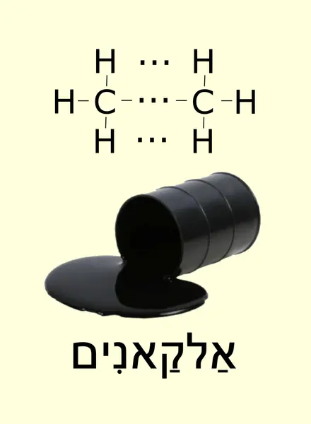
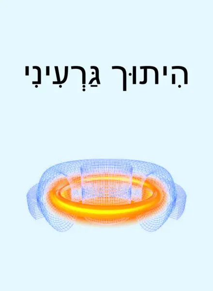
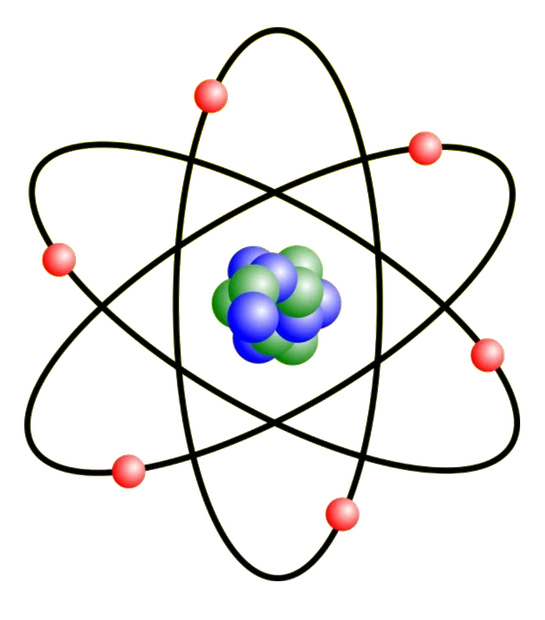

המשחק מיועד ל־2–6 משתתפים בגילאי 6 ומעלה.
תכולת המשחק
- 72 קלפי אטומים, מחמישה סוגים שונים, בצבע כחול.
- 36 קלפי מולקולות, מתשעה־עשר סוגים שונים, בצבע צהוב.
הכנות למשחק
מערבבים את קלפי האטומים ומחלקים 12 קלפים לכל משתתף. את יתר הקלפים מניחים בערמה שתהווה את קופת האטומים.
מערבבים את קלפי המולקולות ומחלקים 3 קלפים לכל משתתף. את יתר הקלפים מניחים בערמה שתהווה את קופת המולקולות.
בגרסה המקוונת המארח יכול לקבוע, לפני תחילת המשחק, כמה קלפים מכל סוג מקבל כל שחקן.
מטרת המשחק
להיפטר מכל קלפי האטומים. השחקן הראשון שמצליח לעשות זאת הוא המנצח.
מהלך המשחק
השחקן הראשון חושף קלף מולקולה מקלפיו, קורא בשמה ומניח את הקלף באזור המשחק. לאחר מכן הוא מניח מקלפיו קלף אטום שמופיע במולקולה.
במהלך המשחק השחקנים מניחים בתורם קלפי מולקולות ואטומים באזור המשחק, לפי הכללים המפורטים מטה.
הכלל המרכזי הוא שבכל שלב מונח באזור המשחק קלף מולקולה אחד ומספר קלפי אטומים, כך שביחד הם מהווים חלק מהמולקולה.
לדוגמה, המצבים הבאים הם חוקיים:





והמצבים הבאים אינם חוקיים:
בתורו, לכל שחקן יש שלוש אפשרויות:
- להניח מקלפיו קלף אטום באזור המשחק, כך שהאטומים המונחים באזור המשחק יהוו יחד חלק מהמולקולה שבקלף המולקולה.
- לשים את קלף המולקולה שבאזור המשחק בערמת הקלפים המשומשים, ולהניח מקלפיו קלף מולקולה וקלף אטום, כך שכל האטומים המונחים באזור המשחק בסוף תורו יהוו חלק מהמולקולה החדשה שהניח.
- לקחת קלף אטום מהקופה.
לדוגמה, אם באזור המשחק מונחים הקלפים
אז שחקן בעל הקלפים

יכול להניח קלף אטום
או לחילופין לשים את קלף המולקולה שבאזור המשחק, אמוניה במקרה זה, בערמת הקלפים המשומשים, ולהניח קלף מולקולה וקלף אטום
סיום הרכבת מולקולה והתחלת הרכבה חדשה
כאשר שחקן מסיים להרכיב מולקולה, שמים את קלף המולקולה בערמת קלפי המולקולות המשומשים, ומניחים את קלפי האטומים בערמת קלפי האטומים המשומשים. כעת רשאי כל שחקן שהשתתף בבניית המולקולה לקחת חזרה קלף אטום אחד מהקלפים שהוא הניח.
לאחר מכן עומדות בפני השחקן שסיים להרכיב את המולקולה שלוש אפשרויות:
- להתחיל מולקולה חדשה באותו אופן שתואר קודם. לאחר מכן השחקנים ימשיכו להרכיב את המולקולה כפי שתואר קודם.
- לקחת 5 קלפי מולקולה מהקופה, לבחור אחד מהם לעצמו ואת היתר לשים בערמת קלפי המולקולות המשומשים.
- לקחת 5 קלפי אטום מהקופה, לבחור אחד מהם לעצמו ואת היתר לשים בערמת קלפי האטומים המשומשים.
במקרה שהשחקן בוחר באפשרות 2 או 3, התור עובר לשחקן הבא והוא יוכל לבחור בין אותן שלוש אפשרויות, וכן הלאה.
קלפים מיוחדים
לשחקנים מתחילים מומלץ להוציא את הקלפים האלה מהערמה ולשחק תחילה בלעדיהם. במשחק כאן אין צורך להוציא אותם ביד: המארח מסמן "בלי הקלפים המיוחדים" בחדר ההמתנה, לפני כל חלוקה, והם אינם נכנסים לחפיסה.
קלף אלקאנים

כאשר שחקן מניח קלף מולקולה שעליו כתוב "אלקאנים", עליו להכריז כמה אטומי פחמן יש לאלקאן שאותו הוא בונה. מאותו רגע מתייחסים אל הקלף כאילו הוא מייצג את האלקאן עם אותו מספר אטומי פחמן, ועם המספר המתאים של אטומי מימן: כפליים ממספר אטומי הפחמן, ועוד שניים.
| אטומי פחמן | 1 | 2 | 3 | 4 | 5 | 6 | 7 | 8 |
|---|---|---|---|---|---|---|---|---|
| אטומי מימן | 4 | 6 | 8 | 10 | 12 | 14 | 16 | 18 |
קלף היתוך גרעיני

קלף היתוך גרעיני הוא קלף אטום. מניחים אותו יחד עם מספר קלפי אטומים רגילים, ואפשר גם עם קלף אחד בלבד, והם באים במקום קלף אטום יחיד שמספרו האטומי שווה לסכום המספרים האטומיים של הקלפים שהונחו יחד איתו. המספר האטומי הוא המספר שמופיע בתחתית קלף האטום, ליד שמו.
לאחר שמשלימים בניית מולקולה, שחקן שהניח קלף היתוך גרעיני אינו רשאי לקחת אותו חזרה.
| שם האטום | סמל | מספר אטומי |
|---|---|---|
| מימן | H | 1 |
| פחמן | C | 6 |
| חנקן | N | 7 |
| חמצן | O | 8 |
הערות
- שחקן שמסיים את קלפיו במהלך הרכבת מולקולה הוא המנצח, ואין צורך להמשיך להרכיב את המולקולה, אלא אם כן ממשיכים את המשחק לקביעת המקום השני.
- את המשחק משחקים כאשר קלפיו של כל משתתף גלויים רק לו.
- אם הקופה נגמרת, מערבבים את הקלפים המשומשים, מניחים אותם עם הגב למעלה והם הופכים לקופה החדשה.
- אם בעת בניית מולקולה נגמרה הקופה ואין קלפים משומשים, התור עובר לשחקן הבא בלי שיהיה צורך לקחת קלף מהקופה. אם עבר סיבוב שלם מבלי שאף שחקן הניח קלף, מעבירים את כל הקלפים מאזור המשחק לערמת הקלפים המשומשים, והתור עובר לשחקן האחרון שהניח קלף אטום, והוא משחק לפי הכללים שתוארו תחת "סיום הרכבת מולקולה והתחלת הרכבה חדשה". כלל זה נועד למנוע מהמשחק להיתקע.
טיפ
נסו להיפטר מאטומי החמצן. מהם הכי קשה להיפטר.

תודה!